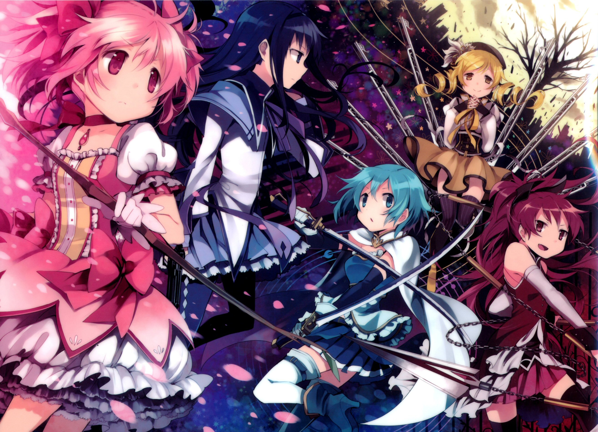
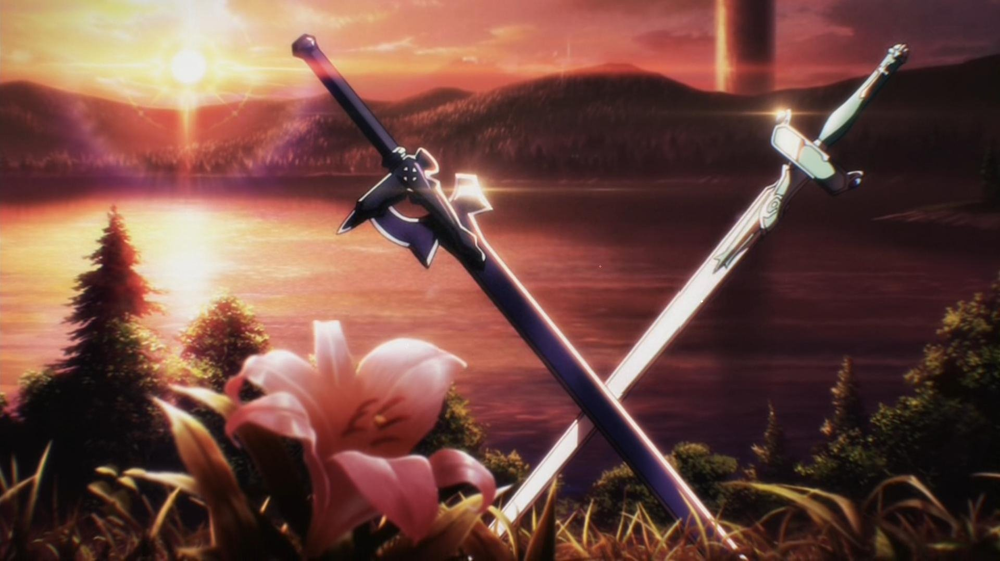
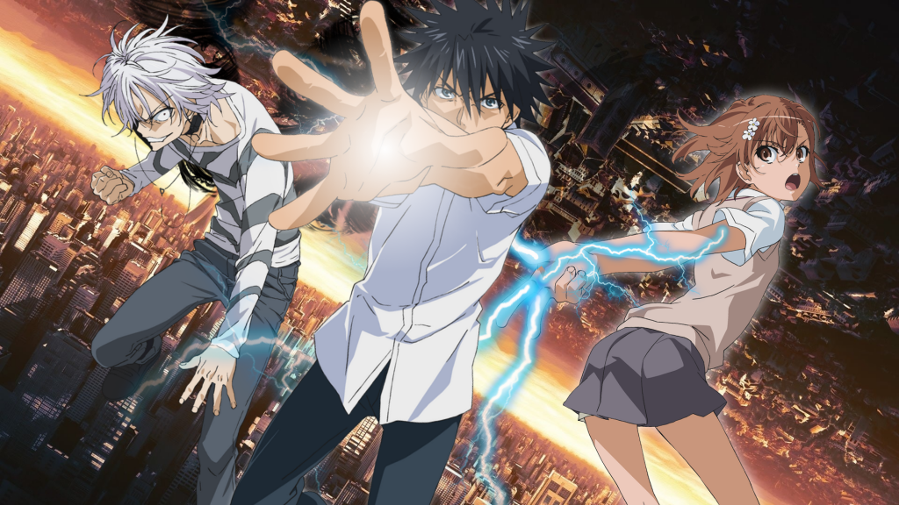
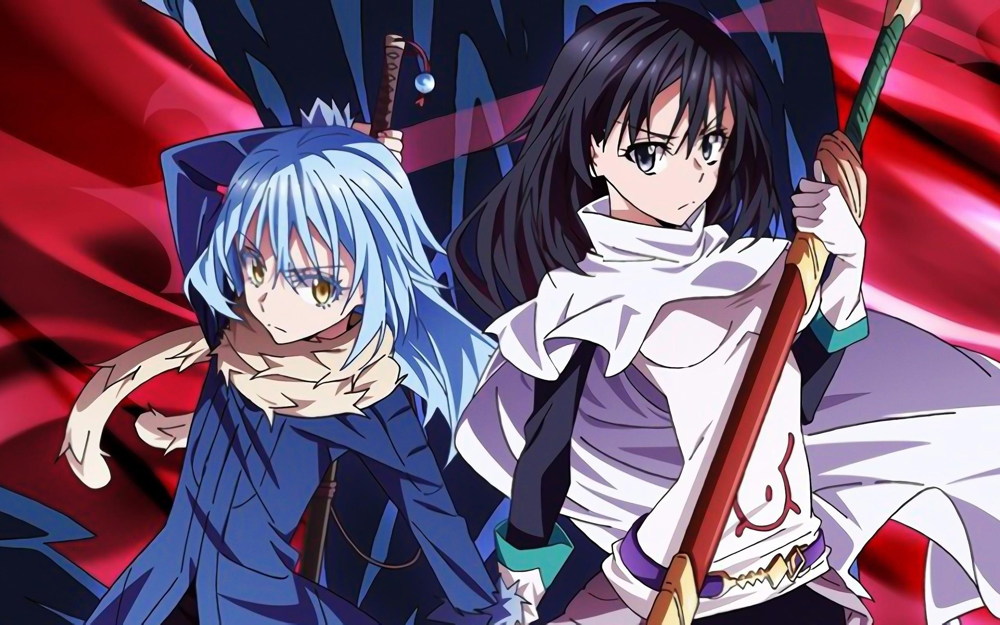
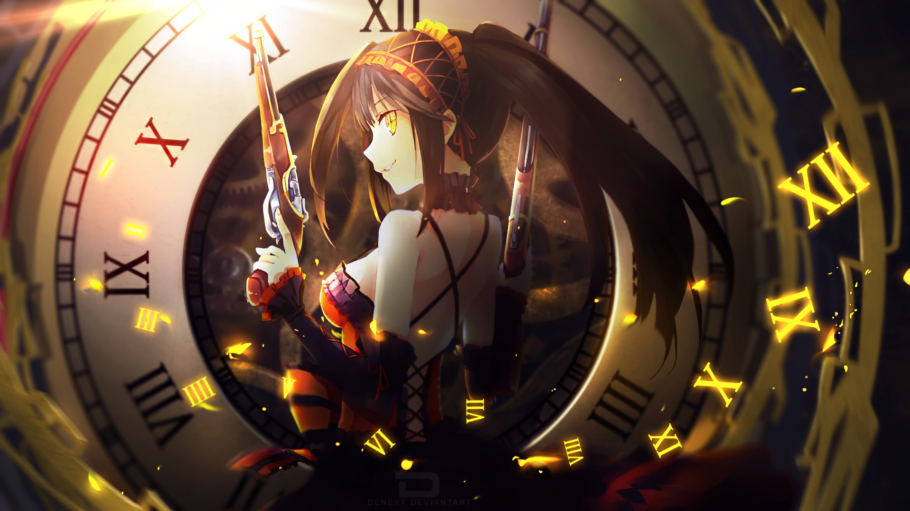

Jeux vidéo
Animation japonaise





Grand fan d'anime depuis longtemps — retrouvez ma liste complète sur
MyAnimeList

Rédaction de guides
Je rédige des guides stratégiques pour Honkai Star Rail, ce qui m'amène à synthétiser des informations issues de multiples sources pour les rendre claires et accessibles. Une habitude qui nourrit directement ma rigueur en documentation technique.